돈 내기 전에 먼저 써 볼 무료 오픈소스 5개예요. 영어 PDF를 배치 그대로 한국어로(PDFMathTranslate), 이력서 디자인·PDF 받기(Reactive Resume), 사진 속 지울 곳 채우기(Compositor·맥), 여행 경비 정산(TREK), 크기만 다른 같은 사진 찾아 지우기(Krokiet). 장마다 원래 돈 내고 쓰는 서비스와 오늘(11월 1일) 공식 페이지에서 확인한 가격을 같이 적었어요. 도구마다 받는 곳 → 설치 → 처음 쓰는 순서로 적었어요.
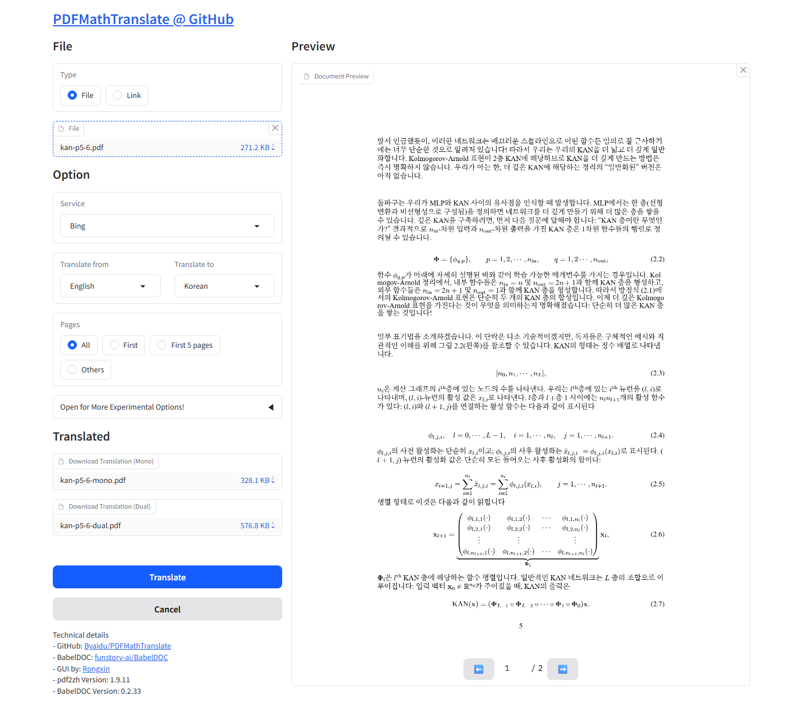
깃허브 PDFMathTranslate 배포 페이지(Releases)에서 윈도우용 zip을 받아요. 'with-assets'가 붙은 쪽(약 520MB)은 글꼴·모델이 같이 들어 있어 처음 실행이 덜 막혀요. 압축을 풀고 pdf2zh 폴더 안 build의 pdf2zh.exe를 두 번 눌러요. 안 열리면 같은 폴더의 vc_redist 설치 파일을 먼저 깔아요.
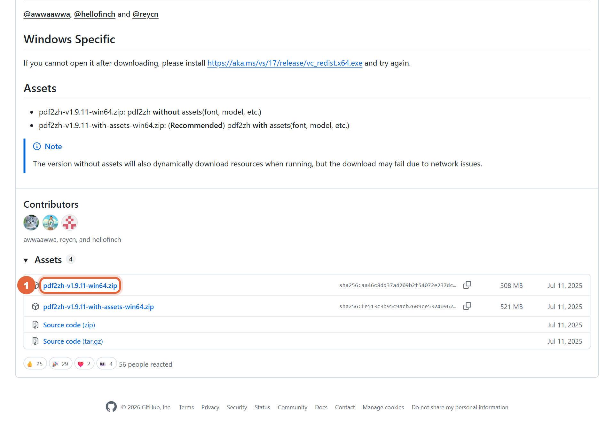
브라우저에 번역 화면이 열려요. PDF를 끌어다 놓고 Service는 'Bing', Translate to는 'Korean'으로 고른 뒤 Translate를 눌러요. 끝나면 번역본(Mono)과 원문·번역을 한 쪽씩 엮은 판(Dual) 두 파일을 받을 수 있어요. 저희는 KAN 논문 2쪽에 1분 안쪽이 걸렸어요.
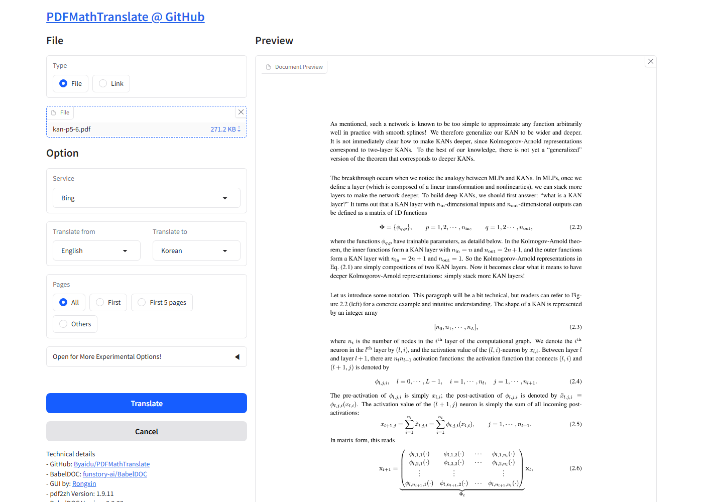
rxresu.me에서 무료로 가입하고 New → Start blank(빈 이력서) 또는 Import a resume(JSON·PDF 가져오기)를 골라요. 왼쪽 Write 칸에 이름·경력을 적으면 오른쪽 종이에 바로 보여요.
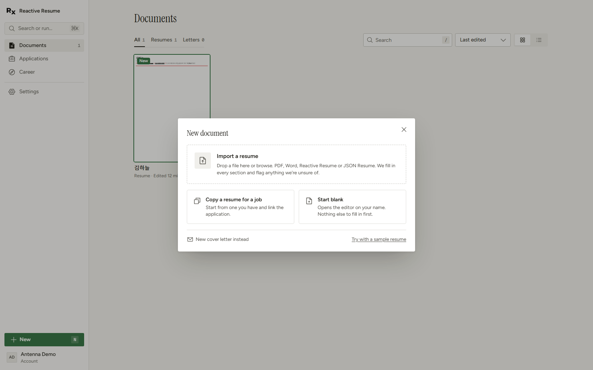
Design → Page → Language에서 Korean을 고르면 '요약·학력·경력' 같은 칸 제목과 날짜가 한국어로 바뀌어요. Type → Font family에서 'Noto Sans KR'을 고르면 한글이 깔끔해져요.
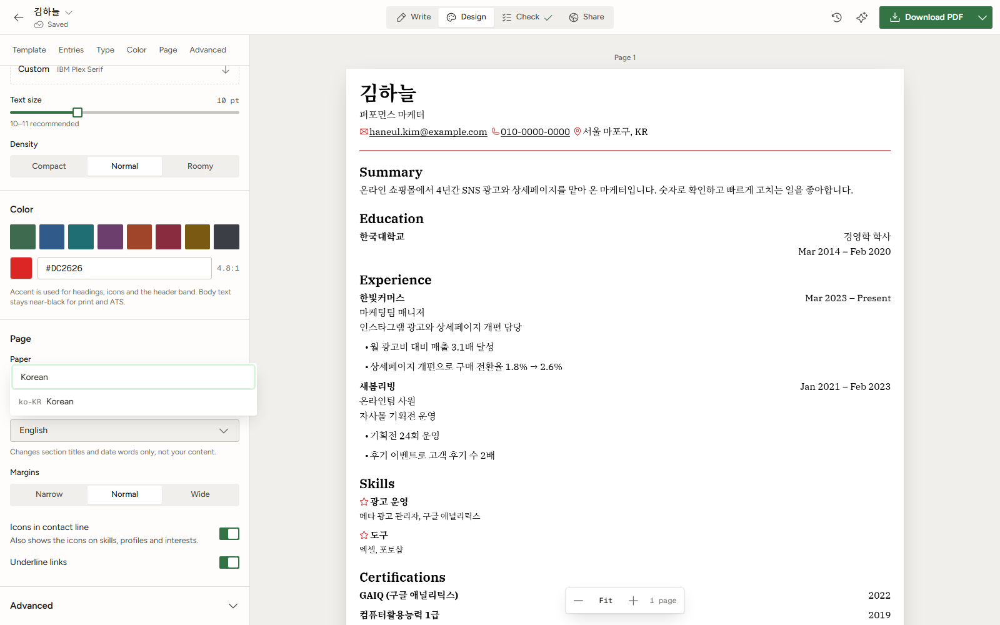
Design → Template에서 템플릿을 누를 때마다 같은 내용이 통째로 갈아입어요(18개). 오른쪽 위 Download PDF를 누르면 바로 저장돼요. 결제 화면은 없어요.
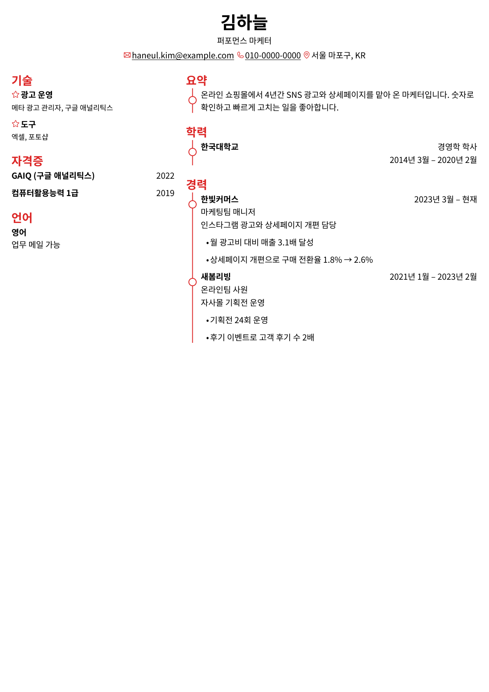
robbietilton.com/compositor에서 'Download for Mac'을 누르거나, 터미널에 아래 '복사해서 쓰기'의 brew 명령을 넣어요. 애플 실리콘 맥 + macOS 26 이상이어야 해요. 윈도우는 개발자가 확인하지 않은 다른 사람의 이식판만 있어요.
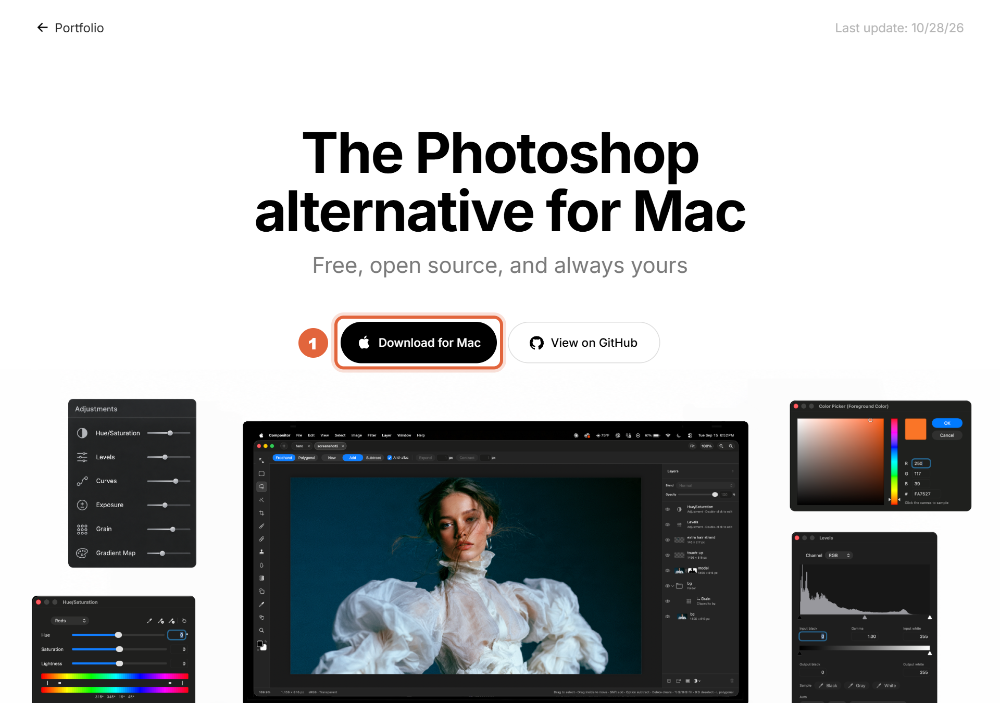
올가미(Lasso)로 지울 곳을 두르고 '주변으로 채우기(Content-Aware Fill)'를 실행하면 주변 무늬로 메워요. 작은 얼룩은 Spot Healing 붓으로 문질러도 돼요. 단축키는 포토샵과 비슷해요.
TREK은 웹 서비스가 아니라 내 컴퓨터·서버에 까는 프로그램이에요. 도커 데스크톱을 깔고 아래 '복사해서 쓰기'의 명령을 넣은 뒤 브라우저에서 localhost:3000을 열어요. 처음 관리자 계정은 도커 기록(docker logs trek)에 나와요. 저희 PC는 도커가 없어 직접 깔지는 못했고, 아래 그림은 공식 도움말 화면이에요.
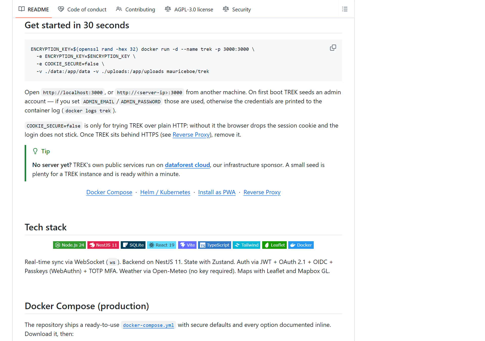
여행을 만든 뒤 Costs(경비) → Add expense로 금액·낸 사람·나눌 사람을 적어요. 다 적으면 오른쪽 Settle up 칸에 '누가 누구에게 얼마' 보낼지만 남아요. 화면 언어는 한국어도 있어요.
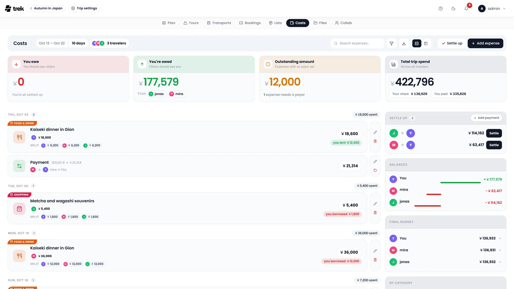
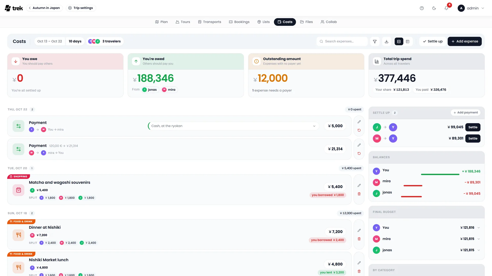
깃허브 qarmin/czkawka 배포 페이지(Releases)에서 'windows_krokiet_on_windows_skia_opengl.exe'를 받아요. 설치 없이 두 번 누르면 바로 열려요(화면이 깨지면 같은 이름의 femtovg_wgpu 판으로). 화면은 한국어로 나와요. Czkawka는 예전 이름이고, 지금은 Krokiet가 새 판이에요.
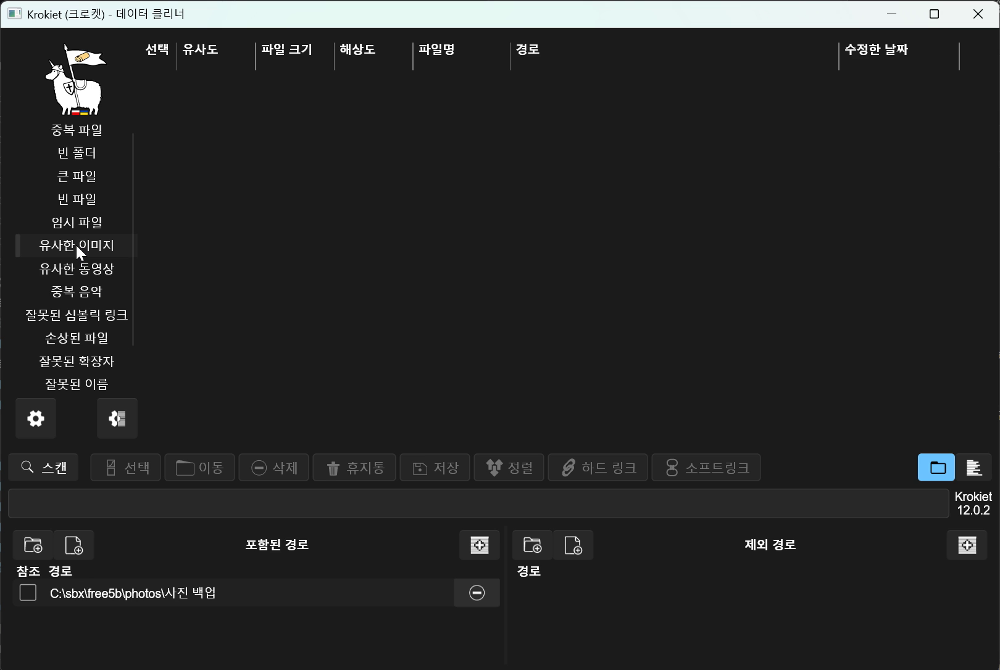
아래 '포함된 경로'에서 + 를 눌러 사진 폴더를 넣고, 왼쪽에서 '유사한 이미지'를 고른 뒤 '스캔'을 눌러요. 같은 사진, 카톡으로 받아 크기만 줄어든 사진이 한 묶음으로 나와요. 줄을 누르면 오른쪽에 사진이 보여요.
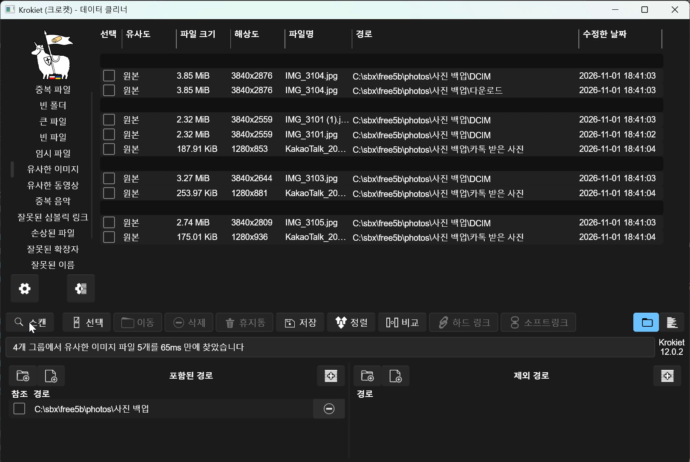
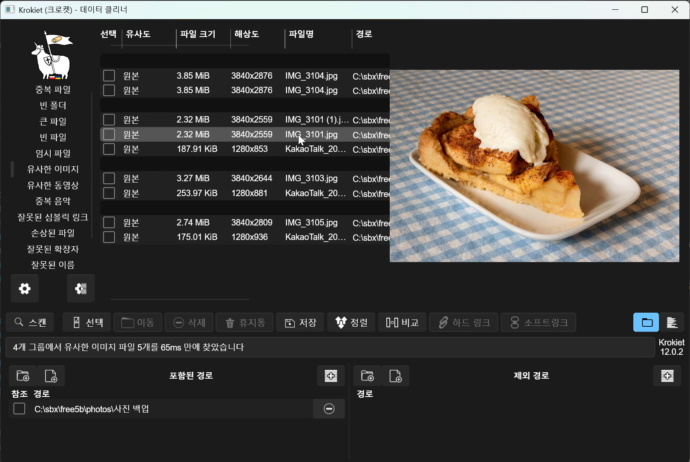
'선택' → '가장 큰 해상도 제외하고 모두 선택'을 누르면 묶음마다 제일 큰 한 장만 남기고 체크돼요. 한 번 훑어본 뒤 '휴지통'(되살릴 수 있음) 또는 '삭제'를 눌러요. 저희 시연 폴더에선 5장이 지워졌어요(앱 아래 줄: '전체 5개 중 5개 항목 삭제').
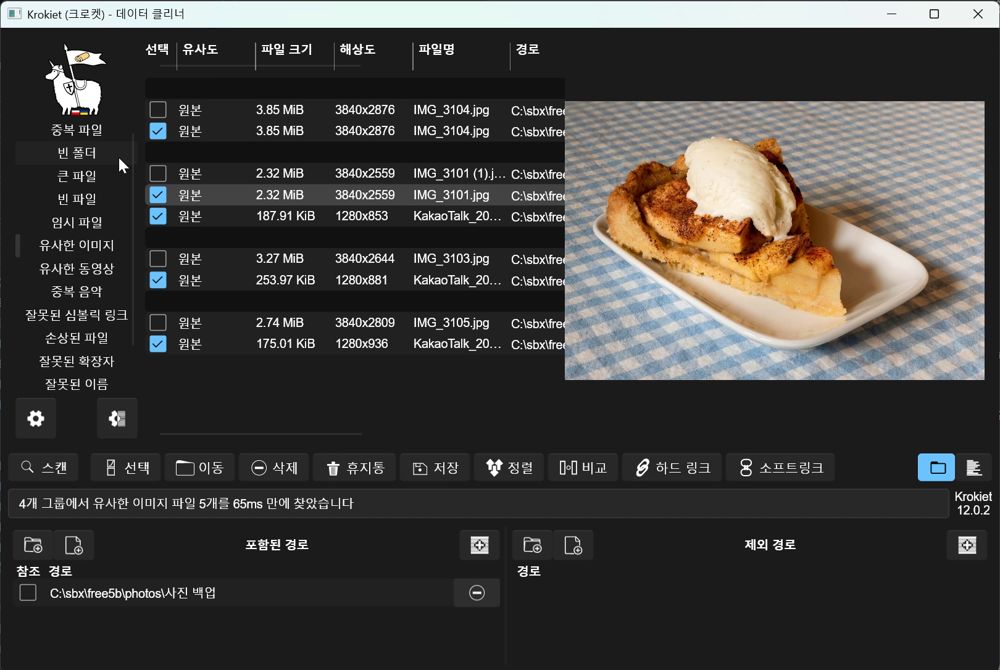
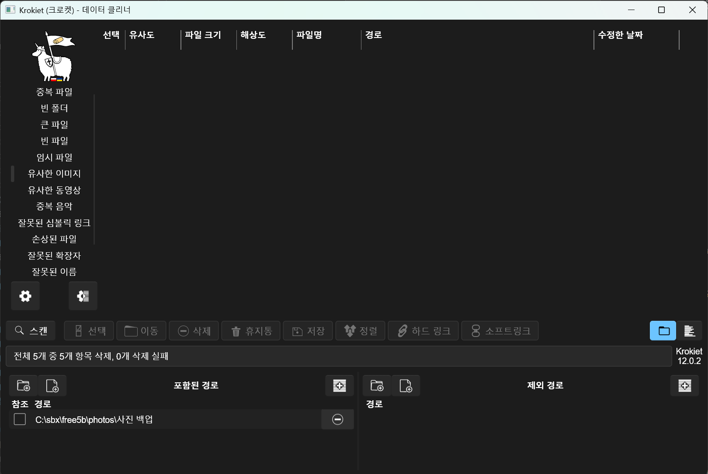
윈도우용 zip
https://github.com/PDFMathTranslate/PDFMathTranslate/releases/latest
브라우저에서 바로
https://rxresu.me
Homebrew가 있을 때
brew install --cask robbietilton-compositor
도커를 깐 뒤 터미널에서
ENCRYPTION_KEY=$(openssl rand -hex 32) docker run -d --name trek -p 3000:3000 \ -e ENCRYPTION_KEY=$ENCRYPTION_KEY \ -e COOKIE_SECURE=false \ -v ./data:/app/data -v ./uploads:/app/uploads mauriceboe/trek
윈도우 exe
https://github.com/qarmin/czkawka/releases/latest
도움이 되셨다면
@ai.antenna.kr
에서 바로 쓰는 AI 활용법을 계속 올립니다.
논문: Liu et al., "KAN: Kolmogorov-Arnold Networks", arXiv 2404.19756 (CC BY 4.0) · Compositor 장면: 개발자 Robbie Tilton 공식 출시 영상 · TREK 그림: TREK 저장소 공식 도움말(AGPL-3.0) · Krokiet 시연 사진: W.carter(CC0) 외 위키미디어 공용 자유 이용 사진